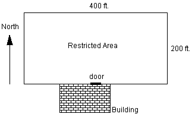
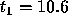
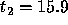

| Monitoring Wheelchair Patients |
| A researcher at a rehabilitation facility is studying the use that a patient makes of a motorized wheelchair in a restricted area at the facility. The chair's motor is connected to the axle by a chain drive. Therefore both wheels turn at the same speed and the chair can travel only in a straight line. The patient can stop the chair, rotate the wheels, and thereby change the direction only while the wheelchair is stopped. To help monitor its usage, the chair is equipped with a compass, a clock, and a speedometer. A recording device records each time interval that the chair is in motion, the average speed during the time interval, and the compass bearing during the time interval. The compass is a standard compass in which 0o is north, 90o is east, and so forth. |  |
A map of the restricted area is shown. The restricted area is the area of the lawn inside a 200 ft by 400 ft rectangle. Patients enter the restricted area from the door of a building located on the southern edge of the restricted area. The door is at the center of the 400 ft southern boundary, as shown in the figure.
The recording device turns itself on when the patient enters the restricted area through the door and monitors the patient's movements for up to 1 hour. Time is measured in seconds from 0 to 3600, with time 0 being the time the patient initially enters the restricted area through the door. The device records 4 numbers to describe the motion of the wheelchair during any interval when the motor is in operation. The first two numbers give the time the motion begins and ends; the third number gives the speed during the time interval; and the fourth number gives the compass bearing during the time interval. (During each time interval the wheelchair maintains constant speed and bearing.) For example, the recorded line
10.6 15.9 2.8 274
would indicate that between times  and  seconds the
wheelchair was traveling at speed of 2.8 ft/sec with compass bearing
(direction) 274  . Times are recorded to 0.1 sec, speeds are recorded to 0.1
ft/sec, and bearings are recorded to a whole number of degrees.
. Times are recorded to 0.1 sec, speeds are recorded to 0.1
ft/sec, and bearings are recorded to a whole number of degrees.
Your job is to analyze the data from the wheelchair's recording device. Specifically, you must determine the following:
For the purpose of answering these questions, use coordinates with the location (0,0) corresponding to the southwest corner of the restricted area and the location (400,200) corresponding to the northeast corner. Since the recorder switches on when the patient passes through the door, the position of the patient at time t = 0.0 is always (200,0). Patients will be traveling north when they enter the restricted area.
The input data consists of several data sets. The first line of each data set has an integer which is the number of lines recorded by the device. Each subsequent line in the data set consists of the four numbers recorded by the device during a particular time interval. The end of data is indicated by a data set whose first line consists of the number 0.
In the first data set of the sample input, the patient entered through the
door (at time 0.0) and for the first 5 seconds was traveling due north at 3
ft/sec. From time t = 7 to t = 9 he traveled at a speed of 2 ft/sec with a
compass bearing of 30  . He then stopped, changed his bearing to 60
. He then stopped, changed his bearing to 60  , and then
traveled at 4 ft/sec from time t = 10 to time t = 100. Ten seconds later (at
time t = 110) he headed due north at 2 ft/sec until t = 200.
, and then
traveled at 4 ft/sec from time t = 10 to time t = 100. Ten seconds later (at
time t = 110) he headed due north at 2 ft/sec until t = 200.
The output for each data set begins with an identification of that case. The output indicates whether the patient departed from the restricted area and if so the time and point of departure on the perimeter. If not, the maximum distance the patient reached from the door is provided. For each case, the total distance that the patient traveled is provided. Format your output so that the same labeling information is included as shown in the sample output, with a line of asterisks separating the cases.
4 0.0 5.0 3.0 0 7.0 9.0 2.0 30 10.0 100.0 4.0 60 110.0 200.0 2.0 0 3 0.0 20.0 2.0 0 500.0 600.0 1.0 270 3000.0 3100.0 1.0 0 7 0.0 5.3 2.1 0 19.8 35.6 2.7 346 42.0 78.4 2.3 15 1181.4 1192.1 1.7 117 2107.0 2193.6 2.1 295 2196.3 2201.2 2.0 298 2704.3 2709.2 1.5 208 0
Case Number 1 Left restricted area at point (400.0,132.8) and time 67.2 sec. Total distance traveled was 559.0 feet *************************************** Case Number 2 No departure from restricted area Maximum distance patient traveled from door was 172.0 feet Total distance traveled was 240.0 feet *************************************** Case Number 3 Left restricted area at point (67.0,200.0) and time 2191.4 sec. Total distance traveled was 354.7 feet ***************************************
Assumptions and requirements
1. Within each data set, time intervals will be listed in chronological
order, with the first time interval always having time 0.0 as the time of
entry into the restricted area. All times will be given with one decimal place
accuracy and will be in the range 0.0 to 3600.0 inclusive. For each time
interval specified, the duration of the time interval will be positive, i.e.
the second time specified will be greater than the first.
2. Speeds will be in the range 0.1 to 9.9 ft/sec.
3. Compass bearings will be given as a whole number of degrees and will be
in the range 0 to 359 inclusive. The initial compass bearing for the first
line of data in each data set will be 0.
4. Within each line of data, numbers will be separated by at least one
blank space.
5. All numerical results will be displayed with one decimal place of
accuracy as shown in the sample output.
6. If the patient goes out of the restricted area, his location may include
negative coordinates. However, you don't have to worry about the wheelchair
crashing through the walls of the building.